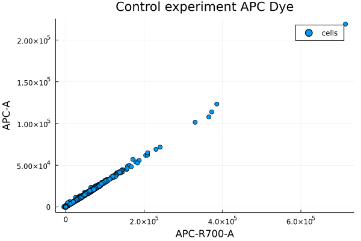
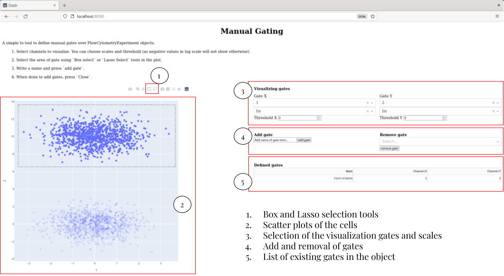
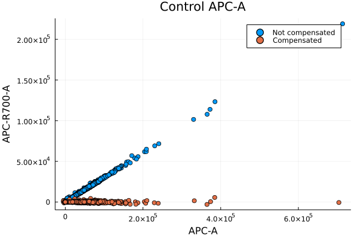
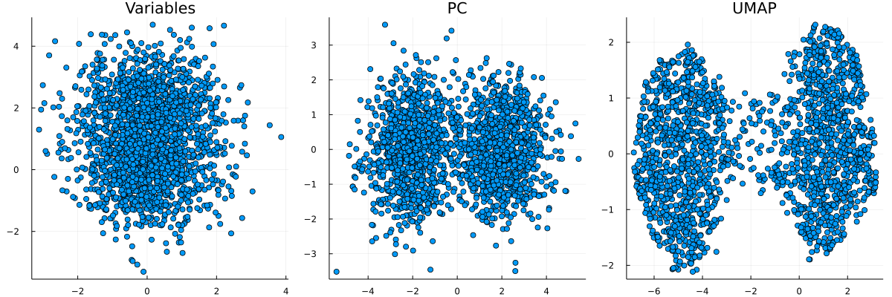

Usage
We are going over the main functionality of the FlowCytometry package.
For this tutorial you will need to have installed the following packages:
- FlowCytometry
- Plots for the visualization of the results
- CSV for uploading files
- DataFrames as storage
First we upload the required packages.
using FlowCytometry
using Plots
using CSV
using DataFrames<div style="padding: 1em; background-color: #f8d6da; border: 1px solid #f5c6cb; font-weight: bold;"> <p>The WebIO Jupyter extension was not detected. See the <a href="https://juliagizmos.github.io/WebIO.jl/latest/providers/ijulia/" target="_blank"> WebIO Jupyter integration documentation </a> for more information. </div>
Basics of the FlowCytometry.jl structures
The Flow cytometry package works around a few structures that help with the upload and manipulation of flow cytometry data.
The basic structure is FlowCytometryExperiment. The structure follows a very similar struture to the AnnData object for scRNA seq analysis of Scanpy.
Loading
We can construct it manually starting from a measures matrix. Let's make a initialization of experiment with 100 cells and 10 channels.
fcs = FlowCytometryExperiment(rand(100,10));Alternatively, we can directly load a fcs experiment.
fcs = loadFCExperiment("FlowRepository_FR-FCM-Z2SS_files/Compensation Controls_APC Stained Control_006.fcs");Accesing the properties
The structure contains several properties useful for the analysis.
- X Matrix of Cells X Channel of the experiment.
- obs Dataframe with all the metainformation of the cells
- var Dataframe with all the metainformation of the channels
- obsm Dictionary containing transformed matrices of the original data.
- layers Dictionary containing Cells X Channel matrices of data that are required to control (e.g. Raw matrix).
- gates List of Gate and Gate set objects
- uns Dictionary contining all the metainformation of algorithms applied to the data.
The data uploaded before contains for now a matrix with 5000 cells and 35 channels.
fcs.X5000×35 Matrix{Float64}:
2303.74 416.599 1283.72 … 164.319 112.581 806.962
74.9271 118.738 38.9001 103.387 43.4448 31.328
-8.80664 37.3513 69.7797 53.6129 -12.1771 16.3808
13.1381 74.3996 117.378 113.407 58.6642 109.884
61.805 154.62 83.2257 151.944 61.3532 92.8747
120.452 149.492 118.274 … 126.721 28.8629 98.2071
47.0315 90.03 65.6665 59.3534 40.6711 45.4934
3250.81 510.924 1784.68 83.2978 149.613 1271.07
129.82 171.005 104.946 218.265 89.9069 138.593
4507.53 762.57 2983.45 151.153 175.381 1292.75
44.5258 98.8863 90.7532 … 96.0772 7.18318 72.9165
3067.69 499.695 1977.24 184.278 133.984 779.138
106.038 73.6164 72.8483 91.8869 30.9219 83.9338
⋮ ⋱
4526.39 922.335 3162.07 228.424 163.164 1784.55
3204.06 453.676 1997.38 117.517 92.6973 995.466
3541.12 521.124 2009.79 … 96.7421 142.616 1033.12
110.326 96.0595 92.4247 104.981 64.8256 76.8489
4377.92 790.997 3020.12 156.357 163.928 1571.42
162.128 197.74 165.195 135.382 49.7978 116.674
1854.82 1089.18 1323.15 522.704 530.454 1234.77
4850.33 1584.76 3109.43 … 703.122 539.034 1849.48
62.8767 123.013 162.019 88.8254 57.7122 17.3599
133.58 103.552 55.547 87.4273 24.1988 263.921
-28.8662 110.622 198.375 68.2685 25.5013 98.1429
4.39487 97.8623 130.614 88.426 38.1077 31.6543The experiment metainformation has been stored in .uns["ExperimentInformation"].
fcs.uns["ExperimentInformation"]Dict{String, String} with 370 entries:
"\$P7G" => "1.0"
"\$P22E" => "0,0"
"\$P26E" => "0,0"
"CREATOR" => "BD FACSDiva Software Version 8.0.1"
"\$P34R" => "262144"
"\$P27E" => "0,0"
"\$FIL" => "Compensation Controls_APC Stained Control_006.fcs"
"\$P2R" => "262144"
"\$P11V" => "495"
"\$P25R" => "262144"
"\$P2G" => "1.0"
"P5BS" => "0"
"P2DISPLAY" => "LIN"
"LASER5DELAY" => "31.30"
"P29DISPLAY" => "LOG"
"P32DISPLAY" => "LOG"
"P3MS" => "0"
"\$P24R" => "262144"
"\$P9G" => "1.0"
"\$P14B" => "32"
"P27DISPLAY" => "LOG"
"EXPORT USER NAME" => "CarlyWhyte"
"\$P10B" => "32"
"\$P9N" => "BB660-P-A"
"\$P3E" => "0,0"
⋮ => ⋮And we have the name of the channels in .channels.
fcs.channels35-element Vector{String}:
"PE-Cy5.5-A"
"BB660-P-A"
"BV650-A"
"BUV615-P-A"
"BYG790-A"
"SSC-H"
"BV786-A"
"SSC-W"
"BV570-A"
"APC-A"
"BV421-A"
"PE-CF594-A"
"BB700-P-A"
⋮
"BYG670-A"
"BUV661-A"
"BV750-P-A"
"FITC-A"
"APC-R700-A"
"BB630-A"
"BUV496-A"
"BUV737-A"
"BYG584-A"
"BUV563-A"
"BB790-P-A"
"BV711-A"It is useful to note than the channels can be accessed directly by calling directly to the FlowCytometryExperiment object as fcs[channel_of_interest]. Let's use this property for ploting a scatterplot of two channels.
scatter(fcs["APC-A"],fcs["APC-R700-A"],label="cells",xlabel="APC-R700-A",ylabel="APC-A",title="Control experiment APC Dye")
We can already see from this data the spillover effect of APC-A to APC-R700-A.
Gating
Flow compensation usually requires of quality control of the cells and measures change in proportion of cells between experimennts to see if there is changes in the number of cells present in specific regions of the channel space.
We can define gates for our experiment in several ways.
Manual gating
We can define a manual gates by calling the function Gating.manualGating!. This will start an app that can be accessed in any browser by writing localhost::channel, for the channel prompted by the function. When desiring to stop adding gates, you will have just to kill the app with ctr+C or similar and the gates will be added to the FlowCytometryExperiment object.
Gating.manualGating!(fcs)┌ Info: Listening on: 0.0.0.0:8050
└ @ HTTP.Servers /home/gabriel/.julia/packages/HTTP/aTjcj/src/Servers.jl:268When calling the function, in the browser you will see a page like this:

Compensation
Most part of flow cytometry experiments use several signaling channels. Some of the most common experimental as flow cytometry or spectral cytometry suffer from spillover/mixing of the information among the channels. To correct this behavior and having uncoupled signals, one-fluorophore control experiments are performed in order to compute what is called the compensation matrice to uncouple the channels.
Loading control experiments
We can upload the control experiments in a special structure named FlowCytometryControl, that is more less a container of diferent FlowCytometryExperiment. Each control experiment is assigned a channel that corresponds to the maximum peack of its spectrum. This is very important to when computing the compensation matrix. The best way of uploading the data is by assigning the different control files to the according channels.
In this example we have a file that has already this assignation:
controls = CSV.read("FlowRepository_FR-FCM-Z2SS_files/attachments/fcs_control.csv",FlowCytometry.DataFrame)
print(controls[1:5,:])[1m5×4 DataFrame[0m
[1m Row [0m│[1m filename [0m[1m dye [0m[1m antigen [0m[1m wavelength [0m
[1m [0m│[90m String [0m[90m String15 [0m[90m String15 [0m[90m Int64 [0m
─────┼───────────────────────────────────────────────────────────────────────
1 │ Compensation Controls_APC Staine… APC-A CD4/CD8 660
2 │ Compensation Controls_APC-H7 Sta… APC-H7-A viability 785
3 │ Compensation Controls_APC-R700 S… APC-R700-A MHC-II 719
4 │ Compensation Controls_BB630 Stai… BB630-A CD3/Thy1.2 631
5 │ Compensation Controls_BB660-P St… BB660-P-A CD45.2/CD3 667We will construct a dictionary assigning file to channel.
fileChannelAssignation = Dict([string("FlowRepository_FR-FCM-Z2SS_files/",i)=>String(j) for (i,j) in eachrow(controls[:,["filename","dye"]])])Dict{String, String} with 28 entries:
"FlowRepository_FR-FCM-Z2SS_files/Compensation Controls_BYG79… => "BYG790-A"
"FlowRepository_FR-FCM-Z2SS_files/Compensation Controls_BV786… => "BV786-A"
"FlowRepository_FR-FCM-Z2SS_files/Compensation Controls_BUV80… => "BUV805-A"
"FlowRepository_FR-FCM-Z2SS_files/Compensation Controls_BV605… => "BV605-A"
"FlowRepository_FR-FCM-Z2SS_files/Compensation Controls_BV650… => "BV650-A"
"FlowRepository_FR-FCM-Z2SS_files/Compensation Controls_BB660… => "BB660-P-A"
"FlowRepository_FR-FCM-Z2SS_files/Compensation Controls_BB700… => "BB700-P-A"
"FlowRepository_FR-FCM-Z2SS_files/Compensation Controls_BUV73… => "BUV737-A"
"FlowRepository_FR-FCM-Z2SS_files/Compensation Controls_BV750… => "BV750-P-A"
"FlowRepository_FR-FCM-Z2SS_files/Compensation Controls_APC S… => "APC-A"
"FlowRepository_FR-FCM-Z2SS_files/Compensation Controls_BB790… => "BB790-P-A"
"FlowRepository_FR-FCM-Z2SS_files/Compensation Controls_APC-R… => "APC-R700-A"
"FlowRepository_FR-FCM-Z2SS_files/Compensation Controls_BV570… => "BV570-A"
"FlowRepository_FR-FCM-Z2SS_files/Compensation Controls_PE-CF… => "PE-CF594-A"
"FlowRepository_FR-FCM-Z2SS_files/Compensation Controls_FITC … => "FITC-A"
"FlowRepository_FR-FCM-Z2SS_files/Compensation Controls_BV421… => "BV421-A"
"FlowRepository_FR-FCM-Z2SS_files/Compensation Controls_BB630… => "BB630-A"
"FlowRepository_FR-FCM-Z2SS_files/Compensation Controls_BYG58… => "BYG584-A"
"FlowRepository_FR-FCM-Z2SS_files/Compensation Controls_BV480… => "BV480-A"
"FlowRepository_FR-FCM-Z2SS_files/Compensation Controls_BUV49… => "BUV496-A"
"FlowRepository_FR-FCM-Z2SS_files/Compensation Controls_BYG67… => "BYG670-A"
"FlowRepository_FR-FCM-Z2SS_files/Compensation Controls_APC-H… => "APC-H7-A"
"FlowRepository_FR-FCM-Z2SS_files/Compensation Controls_BUV61… => "BUV615-P-A"
"FlowRepository_FR-FCM-Z2SS_files/Compensation Controls_BUV39… => "BUV395-A"
"FlowRepository_FR-FCM-Z2SS_files/Compensation Controls_BV711… => "BV711-A"
⋮ => ⋮Now we can load the data.
fcsControl = loadFCControls(fileChannelAssignation);Compute compensation matrix
With the data uploaded we can compute the compensation matrix from the FlowCytometryControl object.
Compensation.computeCompensationMatrix!(fcsControl)Compensate datasets
With the compensated matrix computed, we can compensate the data. There are several methods of proceeding with the compensation.
- Compensate the control data
experimentUncompensated = deepcopy(fcsControl.controls["APC-A"]) #Make a copy before compensation
Compensation.compensate!(fcsControl)Now we can visualize the results of the compensation and see that it has been correctly compensated.
experiment = fcsControl.controls["APC-A"]
scatter(experimentUncompensated["APC-A"],experimentUncompensated["APC-R700-A"],label="Not compensated")
scatter!(experiment["APC-A"],experiment["APC-R700-A"],label="Compensated",xlabel="APC-A",ylabel="APC-R700-A",title="Control APC-A")
xlabel!("APC-A")
ylabel!("APC-R700-A")
- Compensate the a
FlowCytometryExperimentobject with aFlowCytometryControlobject
fcsCopy = deepcopy(fcs)
Compensation.compensate!(fcsCopy,control=fcsControl)- Assign the compensation matrix of a
FlowCytometryControlto aFlowCytometryExperimentand then compensate.
fcsCopy = deepcopy(fcs)
Compensation.assignCompensation!(fcsCopy,control=fcsControl)
Compensation.compensate!(fcsCopy)Dimensionality reduction
In some datasets, the data is very high dimensional and visualizing all pairwise steps may not be possible or hard to interpret. For that reason, we can apply several dimensionality reduction methods to summarize the data.
Let's see that by constructing a toy dataset with two cell types. This data doesn't show well separated by any particular plot in of two of the variables. However, PCA analysis or UMAP projection are able to show the separation between the two clusters.
All this visualizations are stored as transformations of the original data in .obms.
X = [randn(1000,10); (randn(1000,10).+[0 2 0 2 0 2 0 2 0 0])];
fcs = FlowCytometryExperiment(X);DimensionalityReduction.pca!(fcs)DimensionalityReduction.umap!(fcs)plot(scatter(fcs["1"],fcs["2"],title="Variables"),
scatter(fcs.obsm["pca"][:,1],fcs.obsm["pca"][:,2],title="PC"),
scatter(fcs.obsm["umap"][:,1],fcs.obsm["umap"][:,2],title="UMAP"),
layout=(1,3),legend=false,size=[1200,400])
Clustering
One of the main uses of cytometry data is to cluster data by cell types. Several methods are already implemented in the package. Resuing the toy model before.
Clustering.kmeans!(fcs,n_components=2)Clustering.agglomerative!(fcs,n_components=2)plot(scatter(fcs.obsm["pca"][:,1],fcs.obsm["pca"][:,2],markercolor=Array(fcs.obs[:,"kmeans"]),title="KMeans"),
scatter(fcs.obsm["pca"][:,1],fcs.obsm["pca"][:,2],markercolor=Array(fcs.obs[:,"agglomerative"]),title="Agglomerative"),
layout=(1,2),legend=false,size=[800,400])